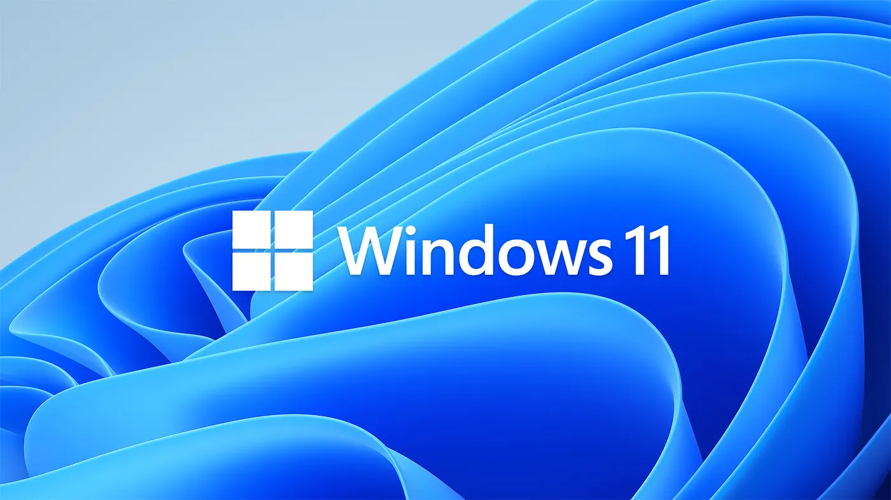

Windows 11
Современная операционная система с новым дизайном и улучшенной производительностью
📅 Дата выхода
Windows 11 была официально выпущена 5 октября 2021 года. Это первая ОС нового поколения от Microsoft с переработанным интерфейсом.
🧠 Основные особенности
- Новый дизайн: Центрированное меню "Пуск" и закругленные углы
- Производительность: Оптимизация для новых процессоров и DirectStorage
- Безопасность: Обязательная поддержка TPM 2.0 и Secure Boot
- Виджеты: Персонализированная лента новостей и информации
- Мультизадачность: Улучшенные Snap Layouts и виртуальные рабочие столы
🎮 Поддержка игр
- Auto HDR - автоматическое улучшение цветового диапазона
- DirectStorage для мгновенной загрузки игровых миров
- Интеграция с Xbox Game Pass
- Поддержка игр в облаке через Xbox Cloud Gaming
💼 Для работы и учёбы
- Встроенное приложение Microsoft Teams
- Поддержка Android-приложений через Amazon Appstore
- Улучшенная интеграция с Microsoft 365
- Функции для гибридной работы и обучения
📊 Системные требования
- Процессор: 1 ГГц или выше с 2+ ядрами
- ОЗУ: 4 ГБ и более
- Память: 64 ГБ свободного места
- TPM: версия 2.0
- Графика: DirectX 12 с WDDM 2.0